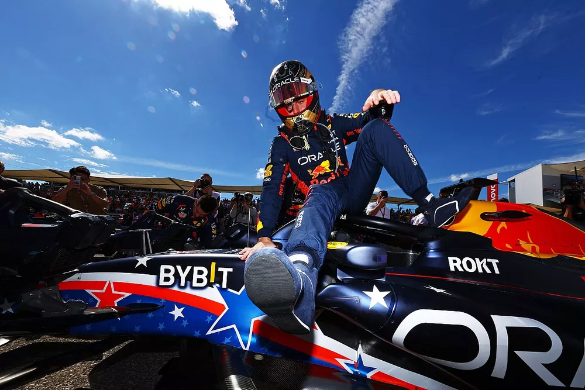

Max Verstappen Formula 1 sprint yarışlarını kazanmaktan "hiç tatmin olmadığını" ve bu formatın rafa kaldırılması gerektiğini söyledi.
Sprint yarışları 2021'den bu yana F1'in demirbaşları arasında yer alıyor. 2023 sezonunda toplam altı sprint etkinliği düzenlenecek. Bu format daha rekabetçi yarışlar sunsa da, Katar'daki eğlenceli bir sprintin ardından Austin'deki sıkıcı geçit töreni ile aksiyon vaadini tam olarak yerine getiremedi.
F1'in patronları şimdi sprintleri daha heyecanlı hale getirmek için radikal format değişiklikleri üzerinde duruyor; ters grid, milyon dolarlık bonuslar ve hatta ayrı bir sprint şampiyonası da ortaya atılan fikirler arasında.
Ancak hiçbir olası sprint konsepti Red Bull pilotu Verstappen'i değeri konusunda ikna edebilmiş görünmüyor; üç kez dünya şampiyonu olan Verstappen formatın en sert muhaliflerinden biri.
Bu yıl şimdiye kadar düzenlenen beş sprint etkinliğinden üçünü kazanan Verstappen, bu zaferlerin kendisi için kazandığı ekstra puanlar dışında pek bir şey ifade etmediğini söyledi.
Motorsport.com'un sprint formatındaki değişikliklerin fikrini değiştirip değiştirmeyeceği sorusuna Verstappen, "Benim için sprint kazanmak tatmin edici bir şey değil. Çizgiyi geçiyorsunuz ve 'Pekâlâ, yarın asıl yarış var' diyorsunuz. İşte böyle oluyor."
"Ben her zaman neden bir şeyler icat etmeye çalışmamız gerektiğini sorgularım. Eğer araçların rekabetçi olmasını sağlayıp uzun süre öyle kalmasını sağlarsanız, bence ürününüz işe yarar.""
"Futbolda ya da başka bir spor dalında kuralları değiştirmiyorlar, bu 100 yıldır böyle. Neden birdenbire eğlenceli hale getirmek için başka şeyler bulmamız gerekiyor?"
"Bence elinizde arabaların birbirine yakın olduğu iyi bir yarış varsa, sprint formatına veya hafta sonuna ihtiyacınız yoktur." şeklinde cevap verdi.
Mevcut sprint formatı Austin'de takımları zor durumda bıraktı ve Ferrari'den Charles Leclerc ve Mercedes'ten Lewis Hamilton aşırı taban tahtası aşınması nedeniyle diskalifiye edildi.
Cuma günkü tek antrenman seansından sonra araçlar kapalı park koşullarına tabi tutuldu, bu da takımların herhangi bir aşınmayı hesaba katmak için sürüş yüksekliklerini artık revize edemeyecekleri anlamına geliyordu. Cuma gecesi Ferrari'sinde "sıfır aşınma" olduğunu iddia eden Leclerc için bu ihraç birdenbire ortaya çıktı.
Verstappen, "Bence sprint hafta sonunu kaldırmalıyız ve o zaman herkes araçlarını normal şekilde ayarlayabilir, çünkü normal bir yarış hafta sonunda böyle bir şey olmazdı."
"Bu tür şeyler sadece 1. antrenman ve sıralama arasında her şeyin çok aceleye getirildiği bir sprint hafta sonu geçirdiğinizde ve 'Hmm, iyi olabiliriz' diye düşündüğünüzde olur."
"Bir kez hataya düştüğünüzde, yapabileceğiniz hiçbir şey yoktur, yapabileceğiniz tek şey lastik basınçlarını arttırmaktır, ancak o zaman da balon lastiklerle dolaşmaya başlarsınız." dedi.